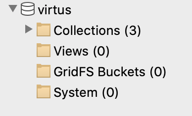
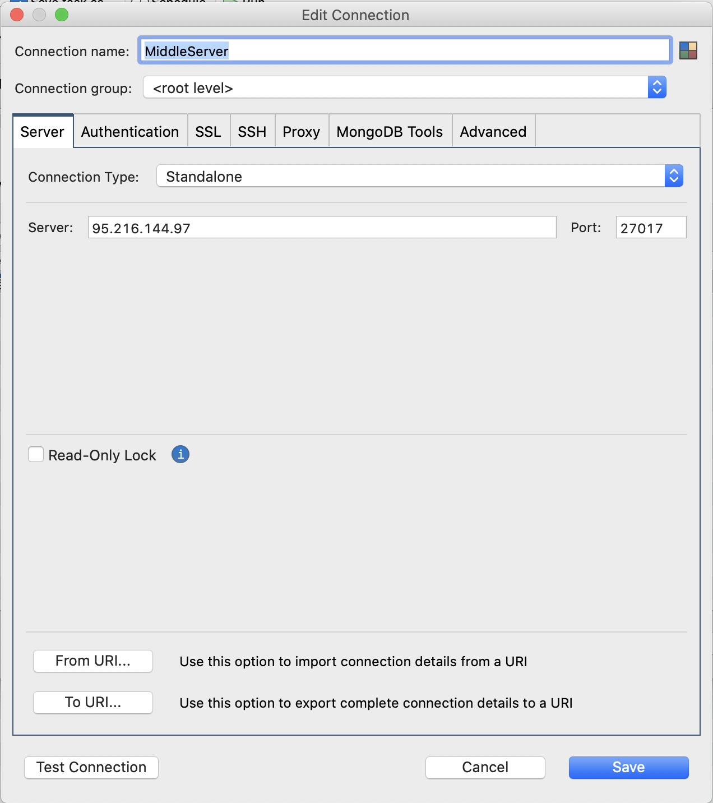
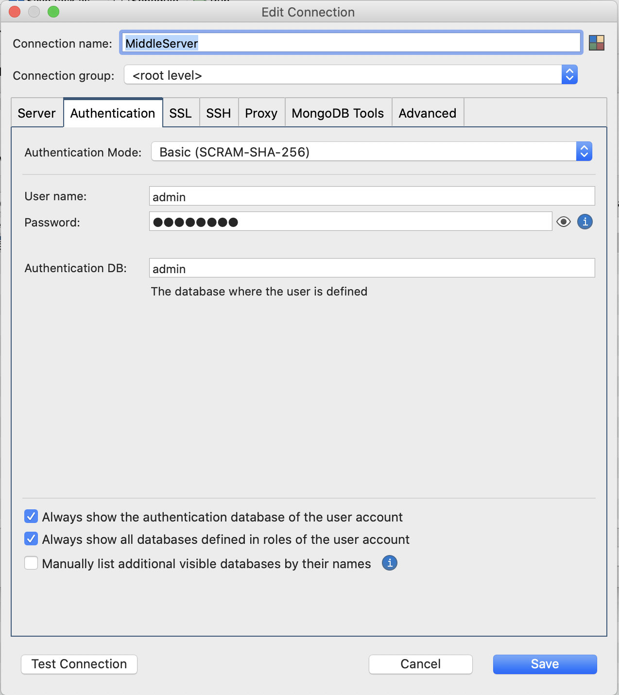

Backend
El backend basa su funcionamiento en el uso de endpoints; usted puede encontrar detalles de todas las estructuras creadas en esta sección.
Tecnologías utilizadas
Al tratarse de una aplicación con proyección a una alta transaccionalidad detaca el uso de las siguientes tecnologías.
- MongoDB - Base de datos NoSQL.
- Nodejs - Entorno de tiempo de ejecución JavaScript para el servidor.
- Express - Framework Nodejs.
Estructura
package.json
app.js
controllers/
user-controllers.js
middleware/
check-auth.js
models/
user.js
routes/
user-routes.js
Base de Datos
Para conectarse a la base de datos se recomienda utilizar el gestor de base de datos "Robo 3T", disponible en su página oficial: https://robomongo.org
Vista de Base de datos desde gestor: 
Cuando realice una nueva conexión usted podrá notar que la pestaña "Server" indica la dirección y puerto de el servidor al cual se conectará. En este caso especial nuestra conexión apunta a la ip de el servidor de test 92.216.144.97.

En cuanto a la autenticación se utiliza el modo "Basic (SCRAM-SHA-256)". Para propósitos de test el usuario admin es válido.

Notas
El uso de el puerto 27017 es recomendable mantenerlo abierto para acceso remoto sólo por motivos de testing. En ambiente de producción restringirlo por ips.
Notas
Se recomienda el uso de un servidor Centos o Ubuntu.